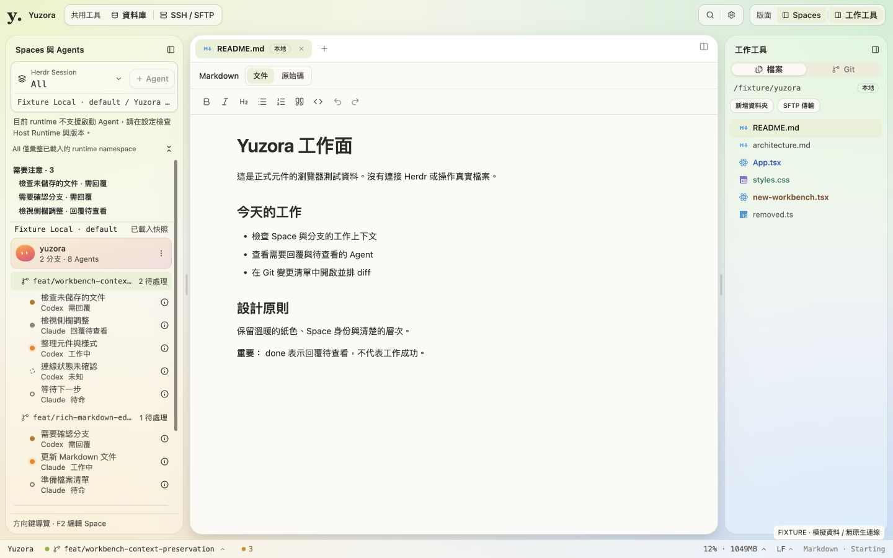
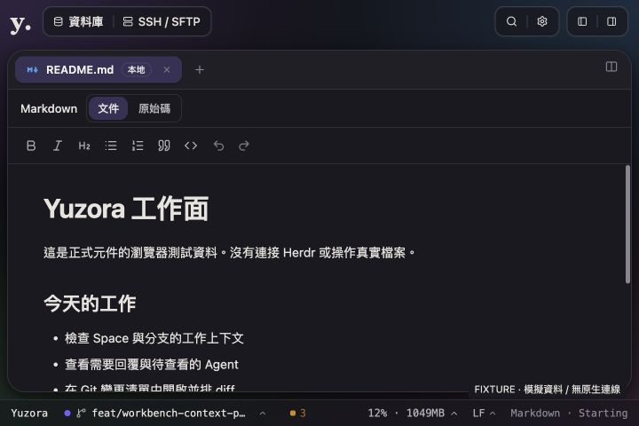
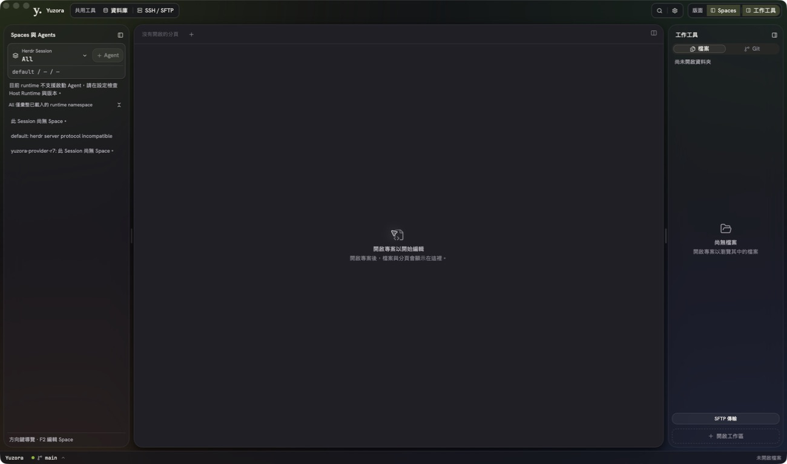

2026-09-08 · Production UI follow-upTop bar 分成三組工具區
使用 shadcn radix-nova ButtonGroup 與 ButtonGroupSeparator，讓既有操作有清楚的區塊邊界。沒有增加新的 runtime action。
| 區塊 / en | 內容 |
|---|
| 共用工具 / Shared tools | 資料庫、SSH / SFTP；資料庫模式保留返回工作面。 |
| 搜尋與設定 / Search and settings | 搜尋檔案與命令、設定；移到右側獨立群組。 |
| 版面 / Layout | 左側 Spaces、右側工作工具；底色顯示目前開啟狀態。 |
Top bar 高度由 40px 調為 48px，工具群組採 34px 輕量霧面容器、細邊框與 10px 圓角。保留原本色票、漸層、macOS traffic lights 安全區及中間拖曳空間。小於 1100px 隱藏次要群組標籤；小於 880px 將側欄按鈕縮為 icon，accessible names 保留。
實作範圍
src/app/AppShell.tsx、src/app/workbench/workbench-shell.css、en / zh-TW workbenchShell.json、新增 src/components/ui/button-group.tsx。ButtonGroup 取自已檢查的官方 shadcn registry，使用 repo 現有 @/lib/utils，沒有安裝多餘的 cn package 或覆寫既有 Separator。
已執行驗證
- AppShell、layout、i18n 相關 56 項測試通過。
- Typecheck、production frontend build、git diff --check 通過。Scoped ESLint 0 errors，AppShell 原有 1 warning。
- 瀏覽器 fixture：1440×900 light / lime、720×480 dark / violet。三組均在可用範圍內，720px 無水平溢出，拖曳區仍約 302px。搜尋按鈕 Tab 後焦點到設定；側欄開關可操作。
- 原生 Yuzora 視窗已確認出現「共用工具」、「搜尋與設定」、「版面」三區。這是本次 top bar 的原生視覺證據，不代表 Herdr 完整流程驗收。
套用時外部清理程序移除了原 target/debug/bundle。已將同一份剛編譯的執行檔保留在 output/Yuzora UI Test.app，連接目前仍運行的 localhost:1420 正式前端預覽服務；它是本機測試入口，不是 release installer。既有 Herdr protocol 不相容仍保留，沒有重啟其 sessions。

瀏覽器 fixture：Light / lime，三個工具群組與中間拖曳區。

瀏覽器 fixture：Dark / violet 最小窗寬；不是 200% zoom 驗收。

原生測試 app：新版工具區已開啟，Herdr 的既有限制如實顯示。